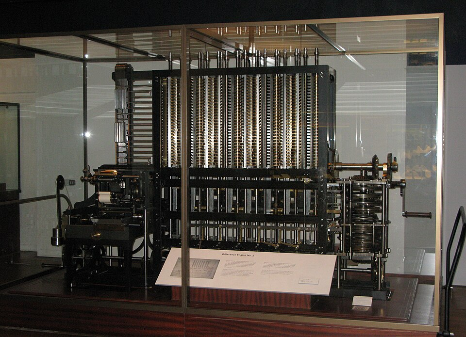

Difference Engine, 1853 · Wikimedia
1822, 런던. 수학자 찰스 배비지가 영국 정부에 제안서를 냅니다 — 차분기관(Difference Engine). 사람이 손으로 푸는 항해표·로그표의 오류를 톱니바퀴가 대신 풀 수 있다고.
정부는 17,000파운드를 투자했습니다. 배비지는 — 완성하지 못했습니다. 그 사이 그는 더 큰 꿈을 꾸기 시작합니다.
해석기관(Analytical Engine)은 끝내 한 부품도 조립되지 못했습니다. 배비지가 죽고 100년이 지나서야, 같은 설계가 진공관 위에서 실현됩니다.